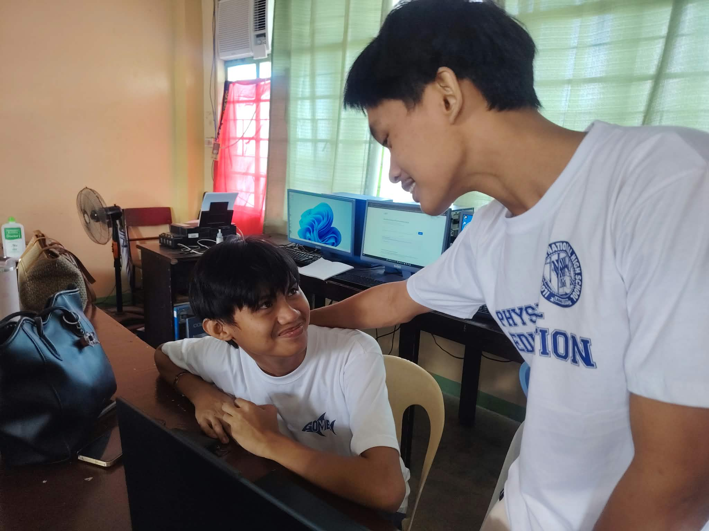

Check in on a friend
Send a message if they have been away: "Hi, we missed you. Are you okay?"
A bystander sees that someone is struggling and does nothing. An upstander notices and does something kind, safe and helpful.
Learners are more likely to come to school when they feel they belong. A friend who notices, waits for them and includes them can make a real difference.

Pick one this week. You do not have to do them all.
Send a message if they have been away: "Hi, we missed you. Are you okay?"
Wait for them at the gate or meet at the same spot each morning.
Offer your notes and tell them what was assigned so they are not lost.
Invite them to sit with you, join a game or share a snack.
You do not know the whole story. Listen, and do not tease or gossip about absences.
If you are worried about a friend, speaking up is caring, not tattling.
A smile and "Glad you're here" can make returning feel much less scary.
Come on time, speak kindly and help make school a place people want to be.
I will notice when someone is missing.
I will reach out with kindness, not judgment.
I will include others and make them feel they belong.
I will tell a trusted adult when a friend needs more help than I can give.
Present Po! starts with me.
Being an upstander does not mean solving everything alone. Tell a teacher, the guidance counselor or a parent if a friend:
If someone is in danger right now, tell an adult immediately.